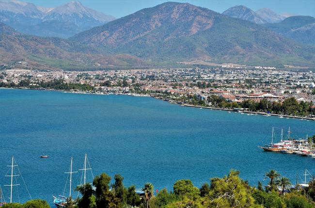

|
Fethiye |
|  Muğla’nın 13 ilçesinden biri olan Fethiye, şehrin en geniş yüzölçümüne sahip ilçesidir. Aynı zamanda yaklaşık 151.474 nüfusuyla Muğla’nın diğer ilçelerine göre en fazla nüfusa sahiptir. Huzurlu bir coğrafyaya sahip olması ve denize kıyısı olmasının nüfus artışında etkili olduğunu söyleyebiliriz. Şehrin karmaşasından uzaklaşarak daha sakin ve yeşillikler arasında bir hayat sürmeyi planlayanların en gözde yerleri arasında bulunuyor Fethiye. |
| Telmessos adıyla Antik Çağ’da adını duyurmaya başlayan Fethiye, en eski Anadolu uygarlıklarından biri olan Likya’nın en önemli kentiydi. Telmessos, Antik Çağ’da kâhinler kenti olarak biliniyordu. Bunun sebebi ise, Fethiye’nin dağ yamacına kurulu olmasıydı. Çünkü Telmessos kâhinleri, kehanette bulunmadan önce bu dağın yamacına ulaşarak Akdeniz’in derin sularından ilham alarak kehanette bulunurlarmış. Bu efsane, Fethiye’ye mal olan efsanelerden yalnızca biri. Bu derin ve anlamlı mavi bölgeye ait birçok efsane bulunuyor. Bir başka hikâyeye göre kentin kurucusunun Apollon olduğunu söyleniyor. Güneş Tanrısı Apollon, Finike kralının kızına âşık olur, kızın gönlüne girebilmek için onu eğlendirmeyi amaçlar ve sevimli bir köpek balığı kılığına girerek amacına ulaşır. Gönlünü fethetmeyi başaran kralın kızıyla evlenirler. Evliliklerinden bir erkek çocukları olur. Adını ise Telmessos koyarlar. Kente de oğlunun adı verilir. Daha sonra büyük İskender’in himayesi altına giren kent, MÖ 133 yılında Bizans’a bağlı olarak Anastasiapolis adını alır. 1424’te Osmanlı topraklarında bulunduğu dönemde Meğri adıyla anılan kent son olarak bugünkü adını 1934’de Şehit Pilot Fethi Bey’e borçludur. Kentin kuruluşuna dair net bir bilgi bulunamasa da bazı belgeler ver arkeolojik araştırmalar sonucu geçmişinin MÖ 5 yüzyıla dayandığı ortaya çıkıyor. Kentin en eski adı “Uzak Diyar” anlamına gelen Makri’dir. Bu ismin ise Rumlardan geldiği bilinmektedir.
|
|
|